#9452 Vor uns das Meer
Alternativ: The Mercy

 IMDB-Wertung: 6.0 / 10
IMDB-Wertung: 6.0 / 10  Metascore: 63
Metascore: 63 
Im Jahr 1968 nimmt der Geschäftsmann und Hobbysportler Donald Crowhurst (Colin Firth) an einer Solo-Segelregatta teil, mit dem Ziel, einen Rekord für die schnellste Umsegelung der Erde aufzustellen. Doch das ist nicht seine einzige Motivation, denn beim renommierten Sunday Times Golden Globe Race lockt ein stattlicher Gewinn, mit dem er die schwächelnden Finanzen seiner Firma aufbessern und sich, seiner Frau Clare (Rachel Weisz) und den gemeinsamen Kindern (Eleanor Stagg, Kit Connor) ein besseres Leben ermöglichen könnte. Am 31. Oktober sticht Crowhurst in See, allerdings ist sein selbstentworfenes Boot noch unfertig und der unerfahrene Segler hat schon zu Beginn Probleme. Um sich nicht gänzlich lächerlich zu machen, beschließt er, zu betrügen und so an das Preisgeld zu gelangen. Am 29. Juni 1969 gibt er ein letztes Mal eine falsche Position an - und gilt danach als verschwunden...
Jahr: 2018
Dauer: 101 Minuten
FSK: 6
Land: England Studio: Arthaus FilmverleihTonspuren: DTS - ,
Untertitel: Deutsch,
Auflösung: 1080p (1920x800) Größe: 6379 MB
Genre: Drama, Abenteuer, Biographie
Regisseur: James Marsh
Drehbuch: Scott Z. Burns
Soundtrack: Jóhann Jóhannsson
Darsteller:
 Rachel Weisz als Clare Crowhurst
Rachel Weisz als Clare Crowhurst Colin Firth als Donald Crowhurst
Colin Firth als Donald Crowhurst- 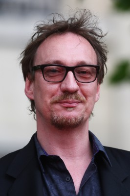 David Thewlis als Rodney Hallworth
- 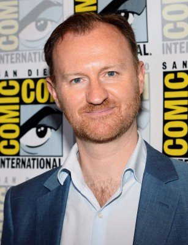 Mark Gatiss als Ronald Hall
- 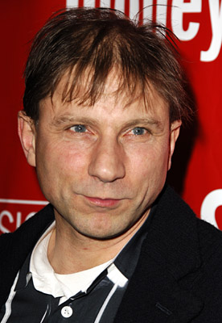 Simon McBurney als Sir Francis Chichester
- 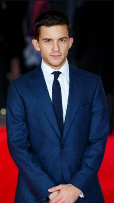 Jonathan Bailey als Wheeler
- Anna Madeley als Sara Milburn
- Andrew Buchan als Ian Milburn
 Ken Stott als Mr. Best
Ken Stott als Mr. Best- 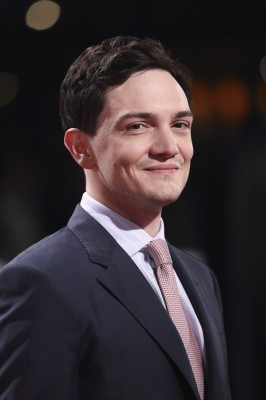 Sebastian Armesto als Nelson Messina
 Kit Connor als Simon Crowhurst
Kit Connor als Simon Crowhurst- 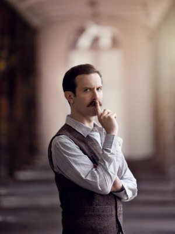 Tim Downie als Style Editor
- Genevieve Gaunt als Miss Teignmouth
- Finn Elliot als James Crowhurst
 Laurence Spellman als Benefits Officer
Laurence Spellman als Benefits Officer- Kerry Godliman als Bear and Swan Landlady
- 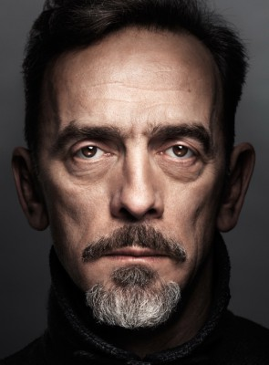 Adrian Schiller als Mr. Elliot
- 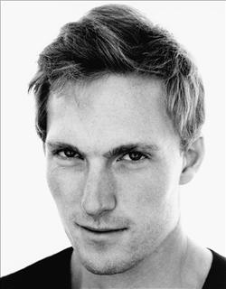 Sam Hoare als Mr. Hughes
- 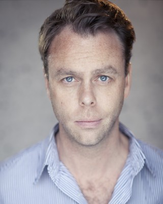 Bruce Mackinnon als Barman
- 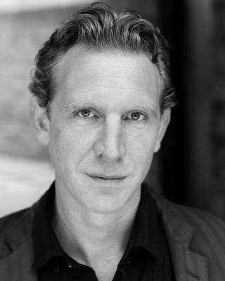 Paul Thornley als Portishead Operator
 Simon Chandler als Sidney Rawle
Simon Chandler als Sidney Rawle- 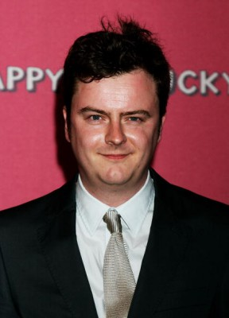 Oliver Maltman als Dennis Herbstein
- 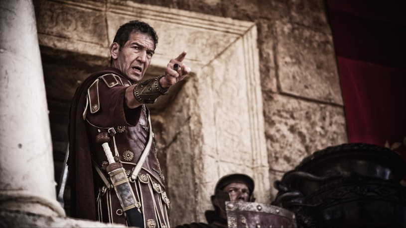 Greg Hicks als Captian Bex
- Richard Teverson als BBC Interviewer
- Eleanor Stagg als Rachel Crowhurst
- Zara Prassinot als Waterskiing Girl
- Mark Davison als Band Leader
- 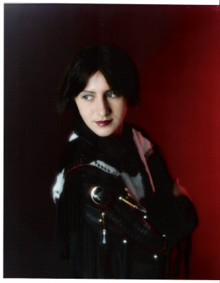 Dilyana Bouklieva als Waterski publicist (uncredited)
- Danny Jackson als Yachtsman (uncredited)
- 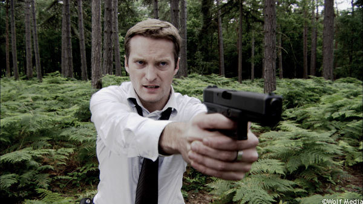 Jefferson King als Boat Salesman (uncredited)
- Jim Main als Teignmouth Local (uncredited)
- Laia Martinez Rubir als Art Saleswoman (uncredited)
- Martin Marquez als Franchessi
- Richard Braine als Chamber Member
- Alexia Traverse-Healy als Françoise Moitessier
- Avye Leventis als Mrs. Hughes
- Maynard Crowe als Portishead Messenger
- Robert Elphick als Reporter
- Matthew Jones als Slate Clapper
- Geoff Bladon als Mayor of Teignmouth
- Jonathan Cass als Boat Show Visitor (uncredited)
- Leo Chell als Reporter (uncredited)
- Stuart Davidson als Press Photographer (uncredited)
- Nick Davison als Press Photographer (uncredited)
- Shane Griffin als Boat Show Visitor (uncredited)
- Leon Harris als Dock Worker (uncredited)
- 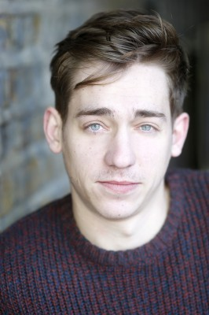 Ashley Hudson als Doll Office Gentleman (uncredited)
- Jeanette Maskell als Radio room Typist (uncredited)
- 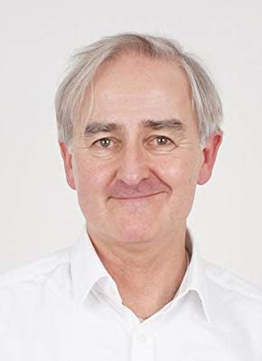 Martyn Mayger als Newspaper Reporter (uncredited)
- Patrick Molyneux als Reporter (uncredited)
Datei: X:\2018(N-Z)\Vor uns das Meer (2018, FSK6, 1920x800).mkv seit 03.09.2018
Festplatte: HD 2018(G-Z)-2019(A-Z)
 Es gibt insgesamt 172 Filme in der Gruppe '2018(N-Z)'
Es gibt insgesamt 172 Filme in der Gruppe '2018(N-Z)'